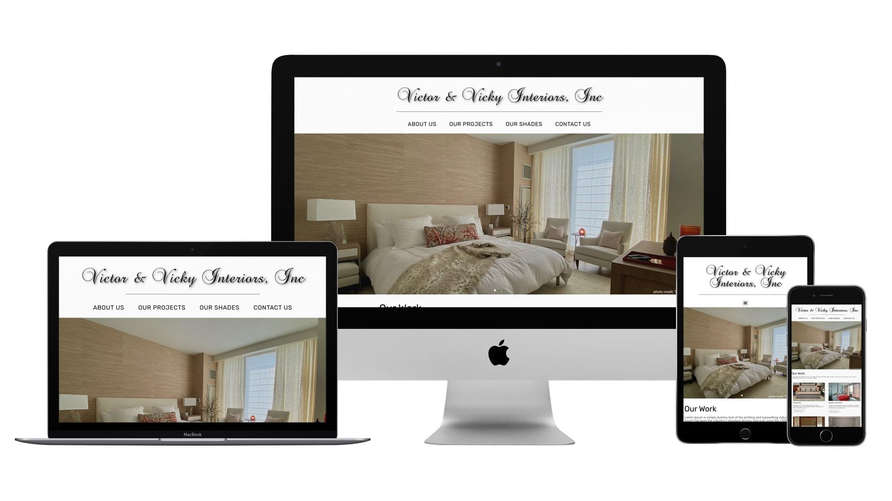
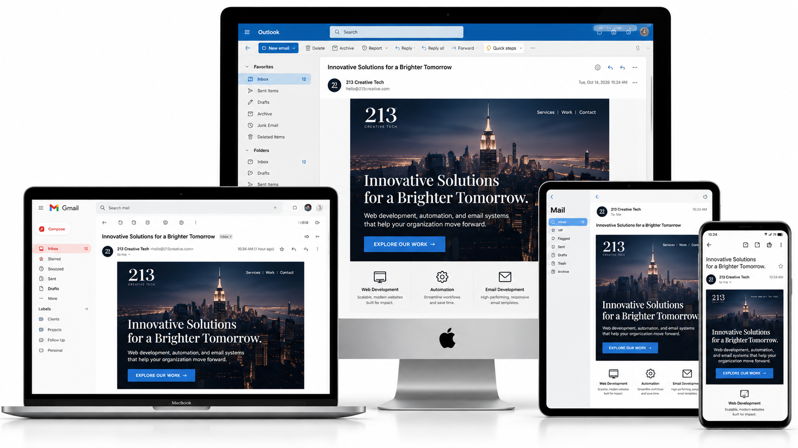
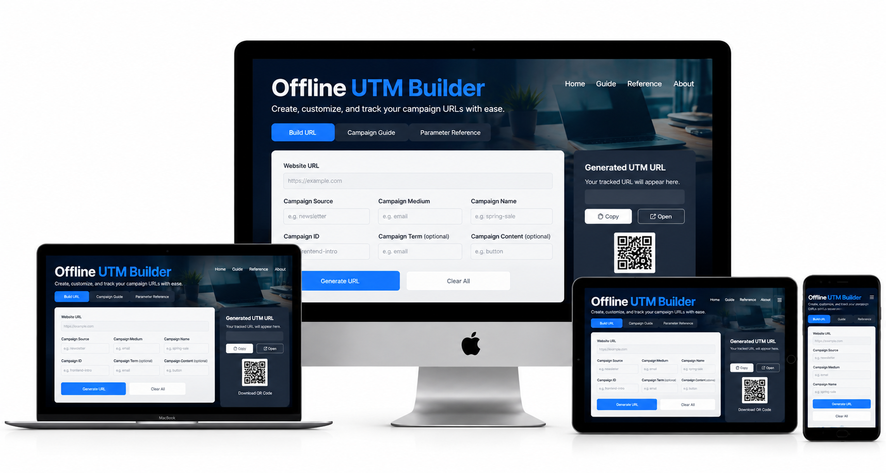
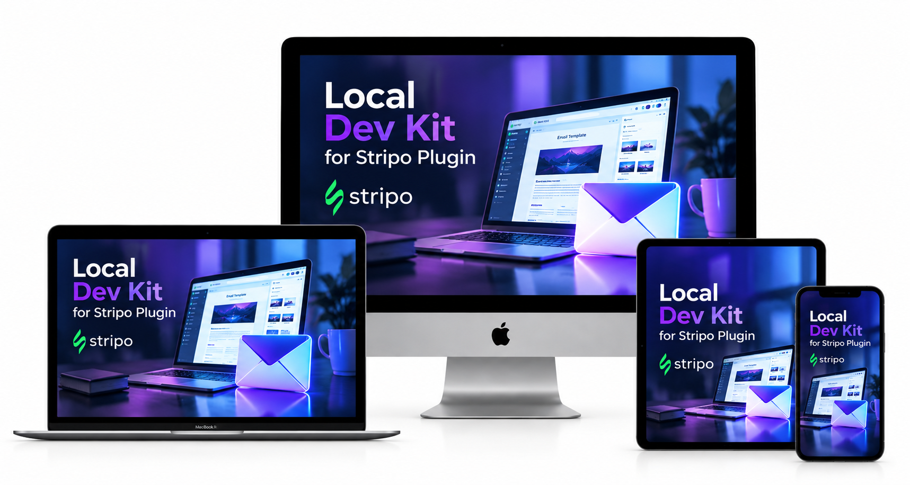

Featured Project
Açaí Framework
A custom frontend framework I built to streamline development with a lightweight, flexible, and modern approach. Includes reusable components, utilities, and documentation.
Selected Work
A selection of recent work showcasing custom development, WordPress solutions, email development, and automation tools.
Selected Work
A selection of recent work showcasing custom development, WordPress solutions, email development, and automation tools.
A collection of frontend systems, WordPress platforms, automation workflows, and digital development projects built across business, e-commerce, nonprofit, and service-based environments.
Project details are intentionally presented at a high level to respect client confidentiality, operational workflow, and long-term business relationships.
Featured Project
A custom frontend framework I built to streamline development with a lightweight, flexible, and modern approach. Includes reusable components, utilities, and documentation.

WordPress Development
Responsive business website supporting an interior design and manufacturing company, with emphasis on service presentation, user experience, and professional brand visibility.

HTML Email Development
Custom-coded, mobile-responsive HTML email templates optimized for Outlook, Gmail, Apple Mail, and other major email clients. Focused on cross-client rendering, accessibility, reliable layouts, and consistent campaign presentation.

Marketing & Analytics Tools
A lightweight, offline campaign URL builder designed to generate consistent UTM tracking parameters for email and digital marketing. Simplifies campaign attribution without requiring an external service.

Email Development Tools
A community-built local development toolkit for working with the Stripo Plugin. Supports launching the email editor, creating projects, saving HTML and CSS, reopening templates, and exporting email-ready HTML.